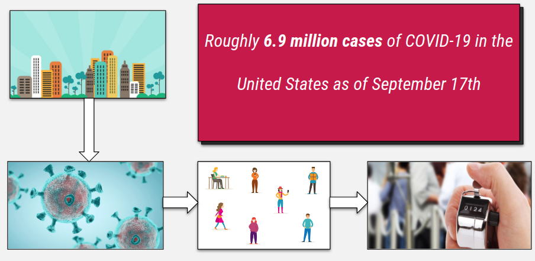
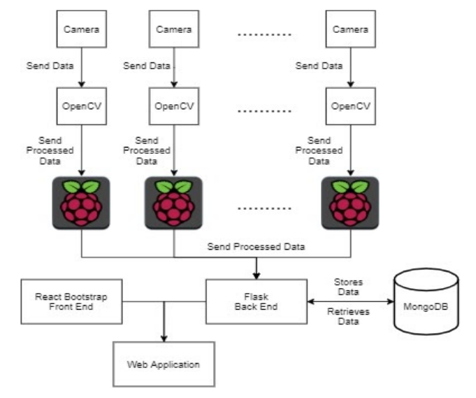
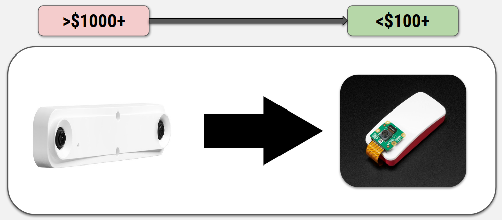

The pandemic is a time of unprecedented personal and social reflection. It has not only affected our personal lives, it has also affected how we utilize technology at school and in the workplace. It’s become necessary to keep track of population density as people move throughout public spaces. One way that this can be implemented is through a people counting infrastructure. The Piwatcher team is tasked with providing NAU an inexpensive, scalable people counting device. This particular device will be networked and accessible across campus. The device, because of its capabilities, will provide administrators with data that can be used outside of the context of a pandemic. Because the counter is scalable and is restricted only to funding, a network of hundreds of people counters would allow NAU to analyze trends regarding the use of campus spaces.
A solution of this scope has many different aspects. A front end service will provide administrators of the people counting infrastructure access to each and every one of the people counting devices. Ideally, administrators will have the ability to access the number of people at any given location of a particular device at any given time, and analyze trends across the whole network of deployed people counting devices. A database will store the events recorded by these devices as they come, realtime, which events are: “person entering the space” and “person leaving the space.” This database will act as the endpoint of the front end service for administrators who might want to access the campus-wide people counting data. There will of course be a back end service allowing the front end and database to communicate effectively.
This software will run on the Raspberry Pi 3 B+ and Pi Camera which are both very affordable and scalable. Front end libraries like bootstrap and jquery can provide a seamless desktop and mobile compatible website for the administrators of the people counting infrastructure. Flask and Django may act as the back end service for the front end to communicate with either a MongoDB or MySQL database. You’ll be able to find more about these technologies in the Documentation tab. Github and Google Calendar will be used to streamline the entire development process. You can access both our source code and calendar on the resources portion of this website, both of which will be updated frequently.
